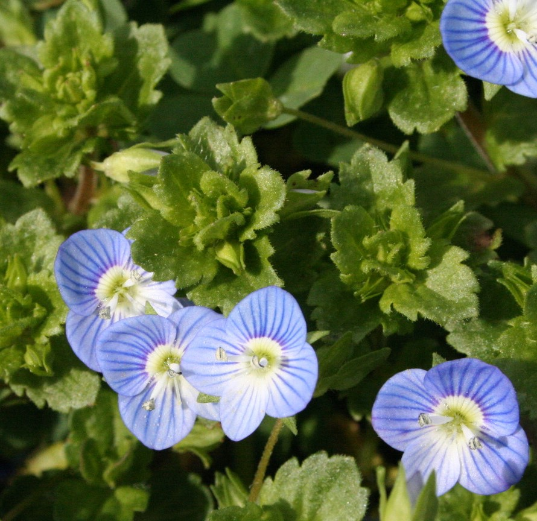
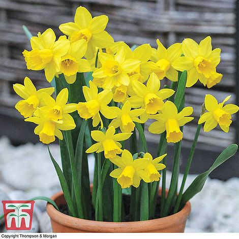

随见植物
Click the Sort Button to sort the table alphabetically, by the column:
| Binomial Name | Common Name | 中文名 | 分类 | 图片 | H X S | Flowers | 备注 |
|---|---|---|---|---|---|---|---|
| Echium webbii | Bugloss | 篮蓟属 | Outdoor |

|
1.5m X 75cm | Flower Time | Notes |
| x Graptoveria ‘Titubans’ | Porcelain Plant | 白牡丹 | Indoor |

|
Hcm X Scm | Flower Time | An easy to grow plant. Looks great in a terrarium or other succulent planter. |
| Silene latifolia | White Campion | 白花蝇子草 | Wild Life |

|
up to 1m High | May to October | White campion can be found in hedgerows. |
| Lilium 'Purple Prince' | Giant Lily Purple Prince | 百合 | Outdoor |

|
2m X 40cm | Flower Time | 'Purple Prince' is a vigorous, erect, bulbous perennial with sturdy stems bearing whorled, elliptic, glossy, dark green leaves and, in summer, large, fragrant, bowl-shaped, purple to dark magenta flowers with yellow throats. |
| Gladiolus murielae | Abyssinian Sword-Lily, Peacock lily, Peacock Orchid | 唐菖蒲 | Outdoor |

|
1m X 40cm | Aug-Oct | The Victorians loved Acidanthera murielae (a cousin of the gladiolus) for cut flowers and it's easy to see why. It has a wonderful scent and lasts brilliantly in the vase. |
| Anemone coronaria De Caen Group | garden anemone | 欧洲银莲花 | Outdoor |

|
25-60cm X 15-22cm | Spring | De Caen Group are tuberous perennials with finely-dissected, palmate leaves and red, blue-violet or white flowers which appear from March to April |
| Hypochaeris-radicata | Cat's ear, Australian cape weed, California dandelion | 猫儿菊 | Wild Life | 30cm X 30cm | May-Sep | A perennial that makes a good meadow component. Rich yellow flowers and dandelion-like seed heads. | |
| Leucanthemum superbum 'Crazy Daisy' | Shasta Daisies | 大滨菊 | Outdoor |

|
60cm X 45cm | Jun-Sep | The frilly blooms of this shasta daisy are a magnet for pollinators. |
| Coreopsis grandiflora 'Golden Joy' | tickseed 'Early Sunrise' | 大花金鸡菊, 大花波斯菊 | Outdoor |

|
45cm X 40cm | Jun-Sep | A compact coreopsis that is ideal for the front of borders. |
| Lavandula-angustifolia-'Munstead' | Lavender 'Munstead' | 薰衣草 | Herb |

|
45cm X 60cm | Flower Time | 'Munstead' is a compact evergreen shrub, to 45cm tall, with narrow, grey-green foliage and spikes of small, highly-fragrant, blue-purple flowers in mid to late summer |
| Cornus alba L. | red-barked dogwood | 山茱萸 | Hedge |

|
250cm X 250cm | Flower Time | Propagate by hardwood cuttings |
| Veronica persica | Common Field Speedwell | 阿拉伯婆婆纳 | Outdoor |  | Hcm X Scm | Flower Time | Common Field-speedwell can be found in flower every month of the year but is at its peak between June to September. |
| Euphorbia amygdaloides 'robbiae' | Wood Spurge | 大戟 | Outdoor |

|
70cm X 1m | Flower Time | Always wear gloves when working with euphorbias. The milky sap is a skin irritant. |
| Euphorbia polychroma / Euphorbia epithymoides | Cushion spurge, many coloured spurge | 大戟 | Outdoor |

|
60cm X 40cm | Flower Time | Notes |
| Pelargonium 'Summer Twist' | Pelargonium | 天竺葵 | Outdoor |

|
40cm X 40cm | Flower Time | A brand-new mix of pelargonium geraniums with clusters of flowers in a striking combination of red and white. The delightfully named ’Summer Twist’ will give you a succession of unique blooms from early summer until autumn, making this an essential addition to your garden borders, pots, baskets and balcony displays. |
| Eryngium x zabelii ‘Big Blue’ | Sea Holly | 海滨刺芹 | Outdoor |

|
90cm X 60cm | Flower Time | Eryngium zabelii ‘Big Blue’ is a versatile perennial that produces large spiky steely-blue flowers that rise above the spiny foliage in summer. Perfect for sunny boarders or containers. |
| Nemesia | Nemesia | 中文名 | Outdoor |

|
Hcm X Scm | Flower Time | Notes |
| Sarracenia | Pitcher Plants | 瓶子草 | Outdoor |

|
Hcm X Scm | Flower Time | Fearsomely efficient flycatchers and easy for beginners to grow |
| Viola-'Rebecca' | Viola 'Rebecca' | 堇菜属 | Outdoor |

|
15cm X 20cm | Flower Time | The scented flowers, held on long stems, are pale cream with slightly frilly edges flecked with violet. |
| Viola-'Nora' | Viola 'Nora' | 堇菜属 | Outdoor |

|
15cm X 20cm | Flower Time | An unusual bicolour, with rosy purple upper petals, yellow lower petals and a lovely scent. |
| Viola-‘Etain’ | Common Name | 堇菜属 | Outdoor |

|
15cm X 20cm | Flower Time | A delightful ‘old-fashioned’ viola with neat rounded petals of a soft creamy-yellow, outlined in soft blue. Very floriferous and highly scented. |
| Viola cornuta ‘Victoria’s Blush’ | Viola ‘Victoria’s Blush’ | 堇菜属 | Outdoor |

|
15cm X 20cm | Flower Time | This vigorous variety has jaunty, rosy lilac flowers and loves a sunny spot. |
| Akebia quinata | Chocolate vine | 五叶木通 | Outdoor |

|
10m X 2cm | Flower Time | Can get quite carried away so may need cutting back after flowering. Propagate by layering or summer cuttings. |
| Digitalis x hybrida 'Pink Panther' | Foxglove | 毛地黄 | Outdoor |

|
70cm X 40cm | Flower Time | Hardy, reliable & will flower year after year. |
| Agapanthus africanus 'Twister' | African Lily | 百子莲 | Outdoor |

|
60cm X 50cm | Flower Time | Blue and white trumpet-shaped blooms form large, globe-like clusters which are held on strong stems above strap-shaped foliage from July to September. Perfect for planting in pots and excellent as cut flowers. |
| Epimedium × perralchicum ‘Frohnleiten’ | Common Name | 淫羊藿属 | Outdoor |

|
30cm X 60cm | Flower Time | Shelter from both cold winds and direct sunshine. Divide plants in autumn. No need to cut back unless leaves looking very tired. |
| Erythronium-californicum | Fawn lily | 猪牙花 | Outdoor |

|
30cm X 30cm | Flower Time | Plant bulbs in autumn. Easy to grow but don't let the soil dry out. Divide clumps after flowering. |
| Hosta ‘Barbara Ann’ | Hosta | 玉簪属 | Outdoor |

|
60cm X 90cm | Flower Time | Large leaved variety with a strong white edge. Watch out for slugs and snails - a slug hunt at dusk with a torch and a bucket can be very rewarding. |
| Lamprocapnos spectabilis | Bleeding heart, lyre flower, lady-in-a-bath | 中文名 | Outdoor |

|
60cm X 60cm | Flower Time | Best inpartial shade. Divide in spring orpropagate from root cuttings in winter. |
| Magnolia x brooklynensis 'Yellow Bird' | Yellow Lily Trees | 黄玉兰 | Outdoor |

|
5m X 3m | Flower Time | Notes |
| Daucus carota 'Chantenay' | Carrot | 胡萝卜 | Vegetables |

|
Hcm X Scm | Flower Time | Notes |
| Cosmos bipinnatus 'Purity' | Cosmos | 波斯菊 | Outdoor |

|
Hcm X Scm | Flower Time | Notes |
| Tulipa 'Ballerina' | Tulip 'Ballerina' | 郁金香 | Outdoor |

|
45cm X 5cm | Flower Time | Looks particularly good with Tulipa 'Spring Green' and Tulipa 'Queen of Night' |
| Tulipa ‘Queen Of Night’ | Tulip ‘Queen Of Night’ | 郁金香 | Outdoor |

|
Hcm X Scm | Flower Time | Notes |
| Tulipa 'Spring Green' | Tulip 'Spring Green' | 郁金香 | Outdoor |

|
Hcm X Scm | Flower Time | Notes |
| Prunus serrulata 'Kanzan' | Cherry 'Kanzan' | 山樱花 | Outdoor |

|
10m X 10cm | Flower Time | This is a great tree for a medium sized garden: the followers are followed by fresh leaves which are a bronzy colour when young, and turn well in the autumn. Prune in summer if you need to maintain shape. Plant with lots of well rotted compost. |
| Anemone blanda 'Charmer' | winter windflower | 银莲花 | Outdoor |

|
10cm X 20cm | Flower Time | Plant tubers in autumn afater soaking them overnight. Good in pots or naturalised under trees and shrubs. |
| Primula 'Blue Lace Mary' | Primula, Primrose | 报春花 | Outdoor |

|
25cm X 20cm | Flower Time | Beautiful detailing on petals so best in a pot so more easily seen. Propagate by division in spring. |
| Tulipa saxatilis 'Lilac Wonder' | Common Name | 郁金香 | Outdoor |

|
25cm X 10cm | Flower Time | Delightful little species tulip - more reliably perennial than larger varieties. Plant bulbs late autumn. |
| Forsythia × intermedia 'Lynwood Variety' | Forsythia | 连翘 | Hedge |

|
2.5m X 2.5cm | Flower Time | They prefers to be freestyle, not squeezed into small front gardens close to path. |
| Viola x wittrockiana ‘Matrix Blue Frost’ | Pansy Matrix™ Blue Frost | 大花三色堇, 紫罗兰 | Outdoor |

|
10cm X 10cm | Flower Time | There are so many different varieties of winter pansy - and all of them perfect for an early spring container. |
| Narcissus-‘Tête-à-tête’ | Daffodil | 黄水仙 | Outdoor |  | 20cm X 5cm | Flower Time | Reliable and popular dward variety. Excellent in pots, window boxes or en masse in borders. |
| Helleborus-argutifolius-'Silver-Lace' | Hellebore | 齿叶铁筷子 | Outdoor |

|
60cm X 40cm | Flower Time | Evergreen perennial. Cut off old leaves as flowers emerge. Propagate from seed when ripe. |
| Bellis perennis ‘Tasso White’ | Daisy | 雏菊 | Outdoor |

|
10cm X 15cm | Flower Time | Great plant for winter bedding. Deadhead regularly to prolong flowering. Not great in very cold gardens. |
| Muscari armeniacum | Grape Hyacinth | 葡萄风信子 | Outdoor |

|
H X S | Flower Time | Flowers: late March, Apr, May |
| Berberis thunbergii | Japaneses barberry | 红叶小檗 | Hedge | H X S | Flower Time | Own | |
| Begonia-Double-White | Begonia | 秋海棠 | Outdoor |

|
H X S | Flower Time | 2021, big pot |
| Freesia | Freesia single White | 小苍兰属 | Outdoor |

|
H X S | Flower Time | 2021, big pot |
| Triteleia laxa 'Queen Fabiola' | Grassnut, triplet lily, Starflower, Wild Hyacinth | 中文名 | Outdoor |

|
H X S | Flower Time | 2021, big pot |
| Dahlia 'Lavender Perfection' | Dahlia 'Lavender Perfection' | 大丽花， 大丽菊 | Outdoor |

|
H X S | Flower Time | 2021, big pot |
| Dahlia hortensis | Dahlia Mignon | 天竺牡丹， 大丽花 | Outdoor | H X S | Flower Time | Notes | |
| Laburnum | Laburnum， Golden Chain | 毒豆 | Tree | H X S | Flower Time | Notes | |
| Agapanthus | African lily | 百子莲属 | Outdoor | H X S | Flower Time | Notes | |
| Jasminum | Jasmine | 茉莉 | Outdoor |

|
H X S | Flower Time | Notes |
| Echinacea purpurea | cone flower, Rudbeckia purpurea | 紫锥花 | Outdoor |

|
H X S | Flower Time | Notes |
| Forsythia | Forsythia | 连翘 | Hedge |

|
H X S | Flower Time | Notes |
| Lupins | Lupin | 鲁冰花，羽扇豆 | Outdoor |

|
H X S | Flower Time | Notes |